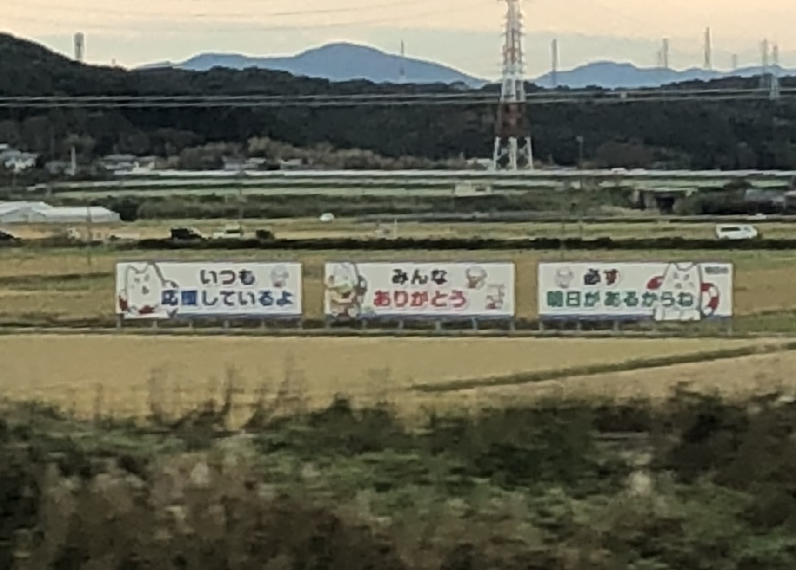
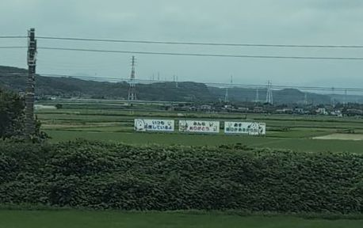

TOKAIDO SHINKANSEN WINDOW VIEW
When can you see Cheer-up Signs from the Shinkansen?
Shippei's cheer-up signs.

- Section
- Kakegawa → Hamamatsu, near Iwata
- Seat side
- Seat E · mountain side
- Timing
- About 64 minutes after leaving Tokyo on a Nozomi train
- Photos
- 2 photos
Location at a glance
Open mapSwitch between the spot and the Shinkansen viewpoint.
How to find Cheer-up Signs
After Kakegawa, heading toward Hamamatsu, a row of small roadside signs appears on the Seat E side shortly after the House Foods Shizuoka Factory area. The messages are simple and encouraging: 'I'm always rooting for you,' 'Thank you, everyone,' and 'There will always be tomorrow.' Catching a positive message from the train can give the ride a small lift. From the Shinkansen they are distant and quick, so look for the three signs with Shippei, Iwata City's white dog character, rather than trying to read every word.
If you are traveling from Tokyo toward Shin-Osaka, start watching the Seat E · mountain side window as you approach Kakegawa → Hamamatsu, near Iwata. If you are traveling toward Tokyo, the order is reversed.
Why this view matters
Cheer-up Signs is one of the window views that make the Tokaido Shinkansen more than a transfer. The train moves fast, so visibility depends on weather, seat position, and timing.
Cheer-up Signs in photos
